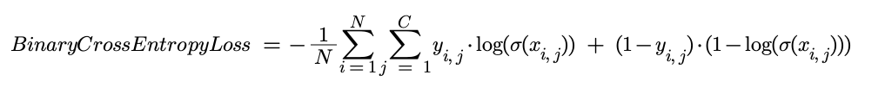
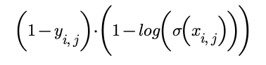

This post aims to cover what loss functions are, what are the differences between them and when you should use each one and finally how to use them in PyTorch.
What is a loss function?
When you are training your neural network you need to assess how well your model is doing. You do this by comparing the predictions your model is making to the desired output. The function that carries out this comparison is called a loss function. Usually it will be designed to return a positive value and the closer that value is to zero the better the result. This can then be used to update the parameters and improve your model using an optimiser.
Depending on what your model is doing, you’re going to want to use a different loss function. If your model is a linear regression where your prediction is a continuous variable then this is different from a classification model where your output is binary.
What are the different types and when to use them?
There are many different loss functions that you could want to use: PyTorch lists 21. However, many of them have a fairly niche usage. We’ll focus on three of the most common here.
Mean Squared Error (nn.MSELoss)
This is used for regression tasks where the predicted and target values are both continuous variables. MSELoss calculates the mean squared difference between each prediction and target pair, expressed using the following formula:

Intuition
The closer the target (y) and the prediction (x) are to one another the smaller the absolute value of y - x. Taking the square of this value ensures that a positive value is always returned. This is then summed across all x to give an overall loss. The smaller the value the closer the distributions of x and y are to one another.
Cross Entropy Loss (nn.CrossEntropyLoss)
This is used for single-label classification tasks where the target value is either 0 or 1 and the prediction is a value between 0 and 1. Cross Entropy Loss takes the predictions for each category in the targets and passes them through a softmax function (this converts all the values into probabilities that sum to one) then takes the negative log so that all values are between 0 and infinity, where a value closer to zero means that the predictions are close to the targets. The softmax and overall cross entropy functions are shown below:

Intuition
Say you have a classification task where you are trying to predict which animal is in an image. For each possible classification, the model returns an activation, the larger the activation the more likely the model considers the image to represent that classification.
| Classification | Cat | Dog | Wolf |
|---|---|---|---|
| Target | 0 | 1 | 0 |
| Activation | 0.2 | 8 | 7.2 |
| Simple Probability | 0.013 | 0.52 | 0.47 |
| Softmax | 0.00028 | 0.69 | 0.31 |
| Max | 0 | 1 | 0 |
The softmax function turns these activations into probabilities. The simplest way to do this would be to calculate the following probability:
Whilst this is fine, the aim of the softmax function is to over-emphasise the highest activation in order to make the model more confident. The extreme end of this approach would simply be to return 1 for the maximum activation and 0 for the rest. Due to the exponential, the softmax function over-emphasises the largest value but the result is not as extreme as the max approach, hence why it is considered ‘soft’.
Once we have probabilities for each of our activations we then need to calculate the cross entropy. Cross entropy originates from information theory and there isn’t space to explain it in huge detail here. Put simply, it calculates how similar two probability distributions are. In our case it is comparing the probability distribution from our model with the distribution of the target.
The fundamental equation for cross entropy is as follows:

Here, p(x) is the probability of event x occurring in the target distribution and q(x) is the probability of x occurring in the model’s distribution. It is more helpful to consider it being made of two parts:
The larger q(x), the larger -log(q(x)). When both p(x) and q(x) are large, a large value is returned, when both are small, a small value is returned. However, when summed across all values of x, the overall cross entropy is lower when the distributions are more similar (i.e. the model is a better predictor). The cross entropy is calculated for each input in the batch and then usually averaged.
Binary Cross Entropy with Logistics (nn.BCEWithLogitsLoss)
This is used for multi-label classification tasks. It first passes the predictions through a sigmoid function so that they are between 0 and 1. It then takes the mean of the negative log of the difference between the prediction and the target (0 or 1). This gives values between 0 and infinity with 0 being desirable. The full function is shown below:
Intuition
In the case of multi-classification it does not make sense to convert all of the values into probabilities. This is because there does not have to be one answer. If there is a high probability of a dog being in the image, it does not necessarily make it less likely that a cat will also be found in the image. We therefore want our activations to be independent of one another. However, we do still want our values to be between 0 and 1 so that it can represent an individual probability of that category being found. This is why we use the sigmoid function to force each activation to lie between 0 and 1.
This then simplifies down to a binary problem. Rather than having multiple probabilities, one for each possible category, we now have two probabilities: the probability of that particular category being present and the probability of it not being present. These of course sum to 1.
The cross entropy for each probability then needs to be calculated. The cross entropy for the probability of x being present is:
And the cross entropy of the probability of x being absent is:
These are then summed together to give the cross entropy for that category. We then sum across all of the possible categories and then repeat across the batch and average.
How do you use loss functions in PyTorch?
You’ll need to use the torch.nn module. For example, if you wanted to use the simplest loss function: MSELoss then you can import the relevant class using the following step at the top of your code:
from torch.nn import MSELossYou will then need to create an instance of this class using parameters specific to your model in order to actually use the function. In most cases for MSELoss there won’t actually be any parameters you need to specify, although you can read about the options here. You can therefore create an instance by simply typing this line of code:
loss_function = MSELoss()Now you can actually use the function in your training loop. The function takes two parameters: the predicted values and the target values. It then returns the loss. This line of code shows you how to use it:
loss = loss_function(input,target)You can then go ahead and calculate the gradients for your parameters and update the parameters using your optimiser.